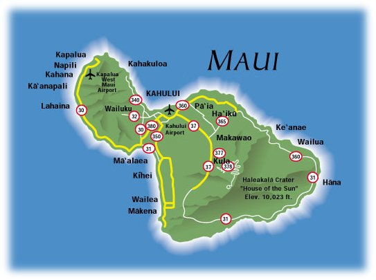
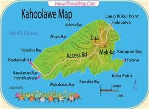
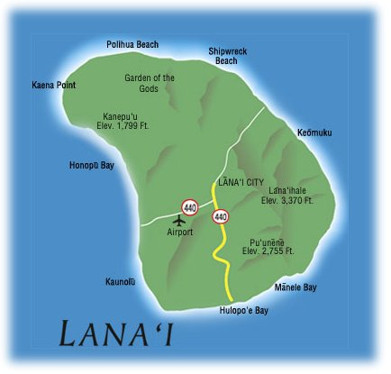
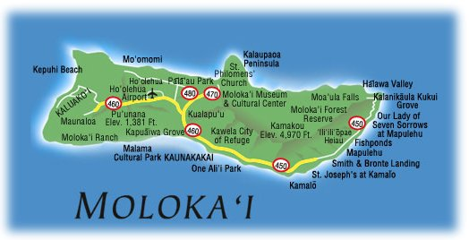
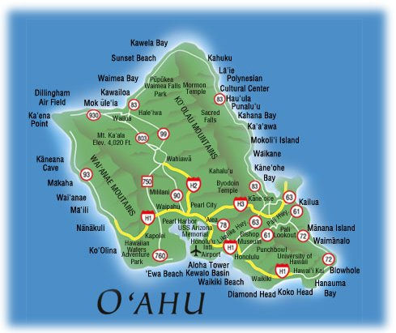
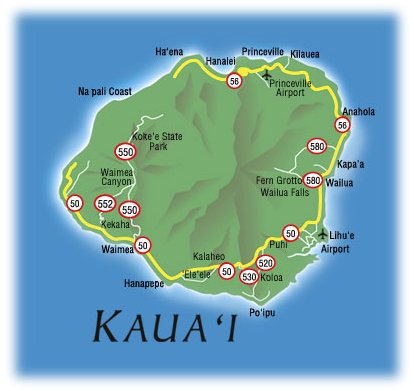
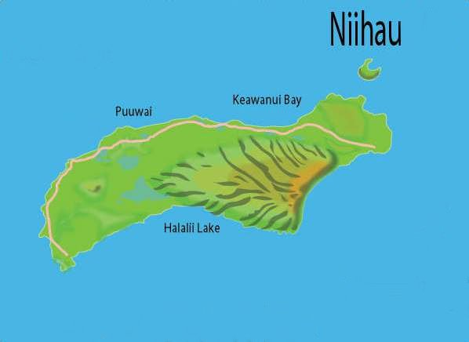

Hawai'i island, A.K.A "the big island" is the biggest and newest Hawai'ian island. Its most famous cities are Kona and Hilo, the rainy side of the island. On this island are the volcanoes Mauna Kea, Kilauea and Mauna Loa, on top of which you can actually go ski. The wet and dry sides of the islands are explained by the feuding goddesses Pele and Kamapua'a in Hawai'ian folklore
Māui

Māui, or "the valley isle," is known for its lush valleys situated between two volcanoes on the island (Haleakalā and Pu'u Kukui). Māui has two major hubs for tourism; on the north-east region of the island is Ka'anapali beach and in south Māui is the Wailea Kihei area, which both house many resorts. Māui's lush beauty is enjoyed by thousands every day.
Kaho'olawe

Just off Māui's shores sits Kaho'olawe. Once, the island was home to an abundance of nature, plants and life; however military missile testing by the United States during the last century has obliterated the island's natural beauty, which is defended by the Protect Kaho'olawe 'Ohana (PKO). Kaho'olawe is often overlooked, but offers an interesting history nonetheless.
Lāna'i

Dole pineapples once grew rampant here, hence its nickname, "the pineapple isle." Lāna'i, for thousands of years was mysterious and rarely visited by the Hawai'ians until King Kamehameha I united the islands in 1810 and built a private fishing home for himself there. With only 30 miles of paved road, Lāna'i keeps itself private and beautiful. Its terrain is much different than the other islands and shows off its rocky landscape in many places
Moloka'i

Moloka'i is a narrow strip of tropical paradise. Its residents are known for being extremely nice to everybody, hence its nickname "the friendly isle." Most famously in recent history, the island was home to a leper colony (icky). Moloka'i has the tallest sea cliffs in the world and also has the most conentrated population of palm trees per square mile!
O'ahu

O'ahu is the most poplar and populated island of Hawai'i. It's home to the capital, Honolulu is the city in which Hawai'ian royalty (Ali'i nui) once lived and ruled. Honolulu is home to the Waikīkī beach district along with dozens of other stunning beaches, hikes, waterfalls and hidden gems you must discover for yourself!
Kaua'i

It seems that every square inch of Kaua'i is covered in greenery. "The garden isle" is definitely the most appropriate name for the place. Here, one can experience the breathtaking Nā Pali coastline which is surrounded by the ocean and beautiful valleys, some of which are only accessible by helicopter!
Ni'ihau

Ni'ihau, "the forbidden isle," is privately owned now by the Robinson family and is seen by very few people other than its residents, who are all full Hawai'ian. Few visitors are ever invited to the island, but those who are are welcomed by a beautiful coastline of beaches and breathtaking views atop Pāni'au, the highest point on the island.